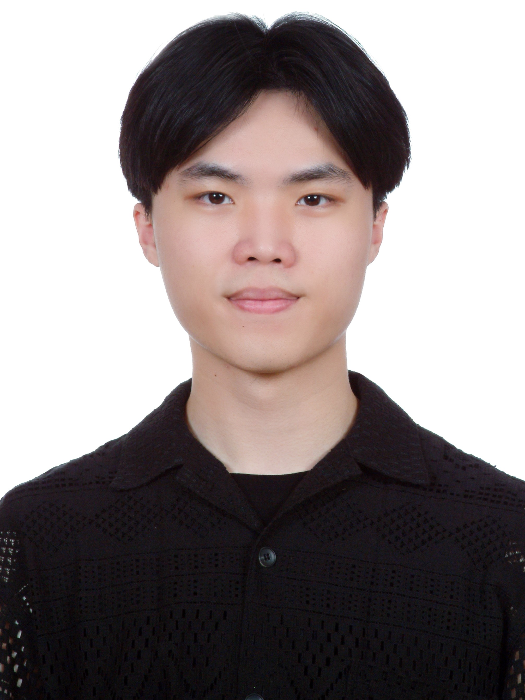

M.S. Student · Electrical Engineering · AI Application Lab · National Changhua University of Education
I am a first-year M.S. student advised by Prof. Wen-Ran Yang. My research focuses on affective computing and long-context state space models (Mamba/SSM) for multimodal emotion recognition, with emphasis on real-time, privacy-preserving edge deployment. I have published at IET ICETA 2024 (cited) and hold an active NSTC grant proposal for my current thesis.
Echo Mind System with Arousal-Valence
Real-time multimodal emotion recognition on Mamba (SSM/SSD), fusing speech and text. Designed for low-latency inference, long-term memory, and on-device privacy. Current M.S. thesis.
IEMOCAP benchmark · NSTC grant submitted
Invigilation Using Lightweight Semantic Analysis
Exam cheating detection via Swin-Transformer-Tiny-V2 pixel-level segmentation and ShuffleNet-V2 face identification. Edge-deployable at 28.9M total parameters.
Seg. Acc. 92.74% · Face ID Acc. 98.6% · 28.9M params
Google QUEST Q&A Labeling Ensemble
DeBERTa / RoBERTa + Mamba ensemble with custom post-processing: rank quantization for dense labels, zero-thresholding for sparse labels, champion-calibrated output distribution.
Spearman 0.4884 — Gold medal level
PYNQ-Z2 AES / DES / GCD Embedded Crypto
AES, DES, and GCD hardware IPs in Verilog, synthesized via Vivado/Vitis with FreeRTOS on PYNQ-Z2. Packaged into a custom Linux kernel build for full FPGA deployment.
Full Linux kernel deployment on PYNQ-Z2
URDiary — AI Conversational Diary
Docker-deployed diary system using LLM APIs with persistent memory. Users journal through natural conversation; includes long-term emotion tracking and support.
Docker · Persistent memory · Emotion analysis
Open to research collaborations, ML engineering internships, and full-time roles.